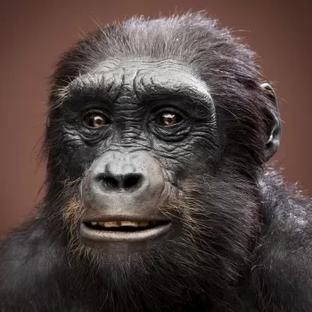
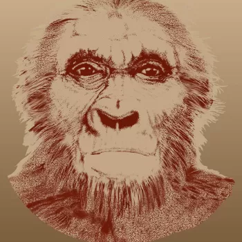
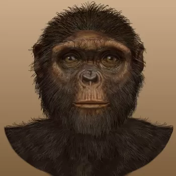
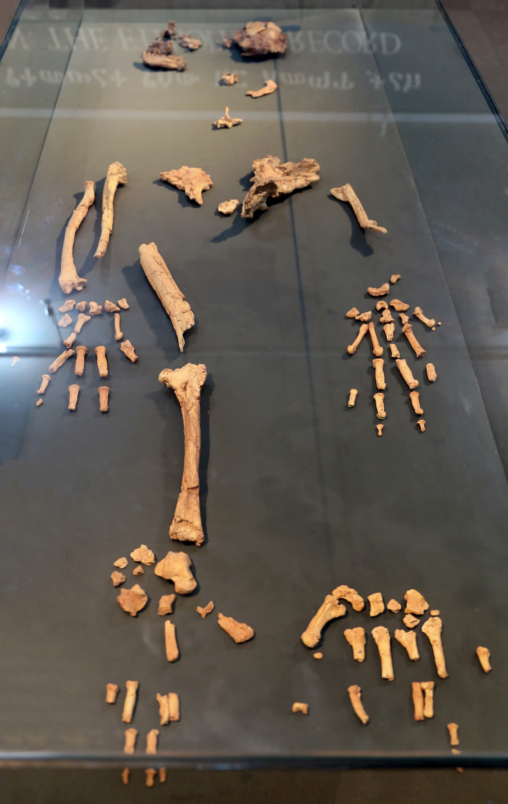

el comienzo de nuestra historia
Sahelanthropus tchadensis
Descubrimiento
Sahelanthropus tchadensis es el hominido mas antiguo conocido, fue descubierto en el año 2001 por el paleoantropólogo Michel Brunet en Chad, un pais de africa central. Esto generó grandes cambios en la ciencia ya que se creia que la humanidad surgio del este de Africa. sus restos fosiles dictan que vivio hace aproximadamente 6 o 7 millones de años, en el final del mioceno. es actualmente uno de los hominidos mas antiguos conocidos, siendo el mas cercano a nuestro origen
Características fisicas
Tenia un cerebro pequeño, parecido al de los otros primates antiguos. Su cara era menos proyectada hacia adelante que la de los chimpancés modernos, y presentaba caninos más reducidos, lo que sugiere cambios en su comportamiento y alimentación. Se cree que caminaba en 2 patas, aunque no se tiene claro debido a la falta de restos completos.
Estilo de vida
Vivía en entornos de bosques abiertos y sabanas cerca de fuentes de agua, y probablemente se alimentaba de frutas, hojas, semillas y ocasionalmente de insectos. No hay evidencia del uso de herramientas y coexistío con otros animales como grandes herbívoros (elefantes primitivos, hipopótamos antiguos, rinocerontes tempranos, jirafas en evolución y distintos tipos de antílopes), depredadores primitivos (elinos primitivos, antecesores de los leopardos y tigres actuales, canidos antiguos, cocodrilos y ave rapaces) y otros primates, lo que hacía su entorno desafiante.
| Grupo | Ejemplos |
|---|---|
| Homínidos | Sahelanthropus tchadensis, Orrorin tugenensis (posible) |
| Primates | Simios primitivos, ancestros de chimpancés y gorilas |
| Herbívoros | Elefantes primitivos, hipopótamos, antílopes, jirafas tempranas |
| Depredadores | Felinos primitivos, cocodrilos, canidos antiguos, aves rapaces |


Orrorin tugenensis
Descubrimiento
Orrorin tugenensis fue descubierto en el año 2000 por los investigadores Brigitte Senut y Martin Pickford en las colinas de Tugen, en Kenia. Su nombre significa "hombre original" en una lengua local de la región se estima que vivio hace aproximadamente 6.1 y 5.7 millones de años. Los científicos encontraron fragmentos de fémur, mandíbula, dientes y huesos de los brazos.
Características fisicas
Este hominido media aproximadamente 1.2 metros de altura, sus dientes eran más pequeños que los de los otros primates antiguos, con esmalte grueso similar al del humano y un cerebro pequeño, la estructura ósea del femur superior sugiere que era un bipede, aunque tenia mas rasgos simiescos.
Estilo de vida
Vivía en un entorno de bosques tropicales y zonas arboladas en un clima más calido y humedo que el actual, se alimentaba de frutas, hojas, semillas y posiblemente de pequeños animales. No hay evidencia del uso de herramientas, pero su capacidad para caminar en dos patas le habría dado ventajas para desplazarse y recolectar alimentos en su entorno, ademas de su capacidad para escalar árboles. Coexistió con otros animales como grandes felinos primitivos, cocodrilos, antilopes y otros hervivores, y otros primates.
volver al indice

Ardipithecuss Ramidus
Descubrimiento
EL Ardipithecus Ramidus fue descubierto en los años 90' por el equipo del paleoantropólogo Tim White, en la región de Middle Awash, Etiopía. Se estima que vivió hace aproximadamente 4.4 millones de años, en el plioceno temprano. En el año 2009 se publicó el hallazgo de un esqueleto casi completo de una hembra, apodada "Ardi", que proporcionó información valiosa sobre su anatomía y estilo de vida.
Características fisicas
Media aproximadamente 1.2 metros de altura y pesaba alrededor de 50 kilogramos, tenía un cerebro pequeño, similar al de un chimpancé moderno. Su cuerpo mostraba una mezcla de características primitivas y adaptaciones tempranas al bipedismo. La pelvis era intermedia entre la de los simios y la de los humanos, lo que le permitía caminar en dos piernas, aunque de manera poco eficiente. Sus piernas eran cortas y no estaban adaptadas para correr largas distancias. Los pies eran muy particulares: el dedo gordo era separado y podía oponerse, lo que le permitía agarrarse a las ramas, mostrando una fuerte adaptación a la vida en los árboles. No tenía un arco plantar desarrollado como el humano moderno. Sus brazos eran largos y fuertes, ideales para trepar, y sus manos tenían gran capacidad de agarre. En cuanto a la dentadura, presentaba caninos reducidos en comparación con otros primates, lo que sugiere una menor agresividad entre individuos y posibles cambios en el comportamiento social.
Estilo de vida
El Ardipithecus ramidus vivía principalmente en bosques densos y zonas mixtas con árboles y espacios abiertos, muchas veces cerca de ríos o fuentes de agua. Esto es importante porque contradice la idea antigua de que los primeros homínidos vivían solo en sabanas secas. Su forma de desplazamiento era mixta: podía caminar en dos piernas, pero de manera lenta e inestable, por lo que todavía pasaba gran parte del tiempo en los árboles, donde era mucho más ágil. Por eso se considera un homínido semi-arbóreo. Sus dientes tenian un esmalte medio, por lo que nos da a entender que tenía una dieta mixta, aunque se cree que evitaba los alimentos duros y fibrosos, prefiriendo frutas, hojas tiernas, semillas y posiblemente pequeños animales. No hay evidencia directa del uso de herramientas, pero su capacidad para manipular objetos con sus manos sugiere que podría haber utilizado objetos naturales para obtener alimento o defenderse.
volver al indice